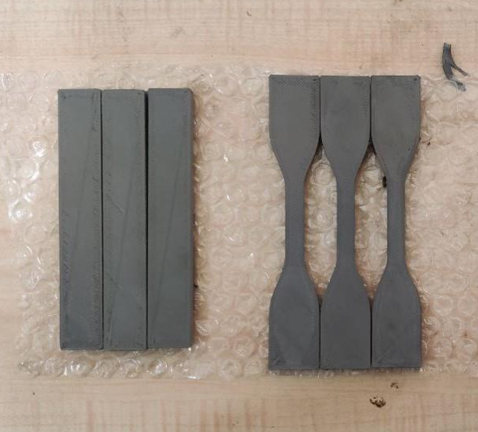
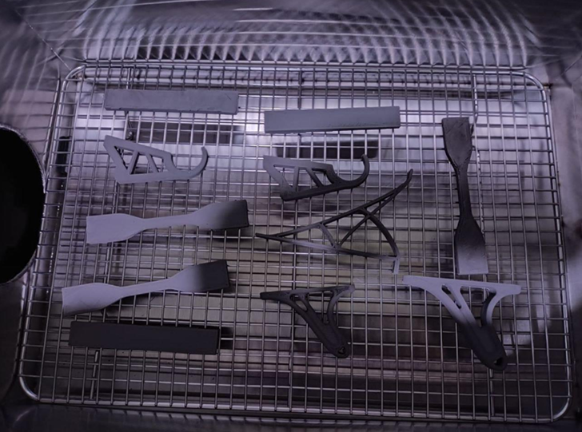
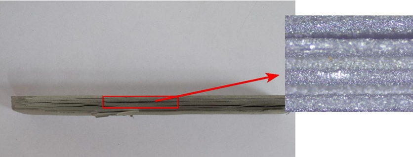
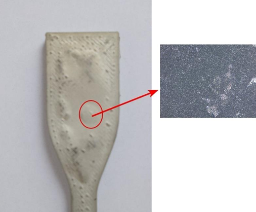
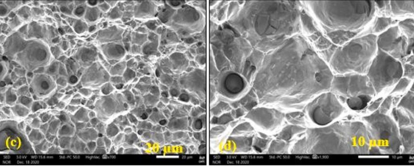
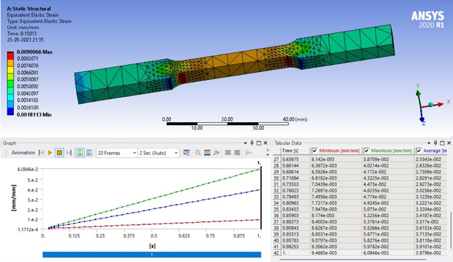

What This Project Is About
Metal 3D printing is usually gated behind expensive powder-bed systems — SLM, EBM — that require inert atmospheres, high-power lasers, and significant capital infrastructure. This project asked whether a standard filament-based FDM printer, normally used for plastics, could produce real metallic components — provided you follow the print with solvent debinding and sintering.
SS316L was chosen for its corrosion resistance, biocompatibility, and wide industrial use. The filament is a composite of stainless steel powder suspended in a polymer binder — the FDM process forms the geometry, and the two post-processing stages burn away the polymer and consolidate the metal particles into a dense, fully metallic part.
The study focused on three print parameters — layer thickness, infill density, and print speed — and their influence on porosity and final part quality, with full characterization of the sintered result.
3D Printing the Green Part
The printer was a CreatBot F430, a high-temperature FDM machine with a hardened nozzle capable of 420 °C — necessary for metal-loaded filament. SS316L filament was sourced from NextGeneration 3D Printers, Chennai.
Early prints at higher layer thicknesses and speeds produced defective parts: warping, layer separation, and poor bed adhesion. Iterating through parameter combinations led to the following optimized settings:
| Parameter | Optimized Value | Notes |
|---|---|---|
| Layer Thickness | 0.15 mm | Initial 1 mm caused severe warping |
| Infill Density | 100% | + 120% flow rate on first 2 layers |
| Print Speed | 30 mm/s | 50 mm/s produced delamination |
A non-obvious fix: the slicer at 100% infill would leave small voids at sharp nozzle-turn corners. Boosting flow rate to 120% for the first two layers closed those gaps without over-extruding the rest of the part.
Specimens were designed in SolidWorks to ASTM E8 (tensile) and ASTM D790 (flexural) standards, plus two real-world geometry tests — an IKEA hook and a shelf bracket — to observe how complex shapes behaved through the full process.

Debinding and Sintering at TANSAM
The CMRIT lab lacked a controlled-atmosphere furnace — non-negotiable for sintering metal parts, as oxidation at high temperature ruins the part. The team sourced the facility from TANSAM (Tamil Nadu Smart and Advanced Manufacturing Centre), which operates a Markforged Metal X system.
Solvent Debinding — Markforged Wash-1
Green parts were submerged in Opteon SF-79 solvent for 16 hours at 120 °C. The solvent dissolves the primary polymer binder while leaving the metal powder network intact. Parts then dried for 4 hours. At this stage they are called brown parts — fragile and porous, but holding geometry.
Sintering — Markforged Sinter-2
Brown parts were loaded into the tube furnace under a 97% Argon / 3% Hydrogen controlled atmosphere. Temperature was ramped to 1360 °C — within the optimal 1290–1370 °C window for SS316L — and held for 16 hours. Metal powder particles bond through atomic diffusion, eliminating porosity and producing a fully metallic component.

Shrinkage Analysis
Sintering consolidates porosity — meaning the part physically shrinks. Comparing CAD nominal dimensions against post-sinter measured averages revealed anisotropic shrinkage across all three axes, consistent with layer-stacking behavior during FDM printing:
The Z-axis shrinkage being highest is expected: inter-layer binder removal leaves more void volume in the build direction than in-plane. These figures provide direct scaling factors for future designs — a part intended to be 100 mm long should be modelled at ~117 mm before printing.
Microstructure and Defects
Post-sinter optical microscopy (AX10, 10× and 50×) was conducted at the CMRIT COE-Additive Manufacturing lab. SEM imaging at BMS College, Bengaluru confirmed that overall porosity had reduced significantly after sintering.



ANSYS FEA — Structural Behaviour
Static structural analyses were run in ANSYS Workbench for both tensile and compression loading on the ASTM E8 specimen geometry, using SS316L material properties. Von Mises stress and strain distributions were computed across the gauge section, and stress–strain curves extracted for both load cases.
Results show elastic behaviour up to approximately 275 MPa — consistent with literature values for sintered SS316L, which typically sits below wrought or SLM equivalents due to residual porosity. The simulation provides a theoretical performance baseline to compare against physical destructive test data, following a standard AM part qualification workflow.

Findings and Takeaways
FDM + Sintering Is a Viable Low-Cost Metal AM Route
The process produced genuine stainless steel components at a fraction of powder-bed fusion costs. The trade-off is tighter process control requirements and slightly lower final density — but for prototyping and non-structural applications the approach is entirely feasible.
Shrinkage Must Be Designed In, Not Calibrated Out
Anisotropic shrinkage of 13–21% is predictable and consistent across specimens. Future parts should apply axis-specific scale factors at the CAD stage before printing, rather than attempting post-sinter correction.
Binder Quality Is the Hidden Variable
Both observed defects — layer delamination and surface bubble formation — trace back to the binder system rather than the metal powder or sintering conditions. Filament sourcing, shelf-life management, and extended debind cycle time are the primary improvement levers.
Infrastructure Constraints Are an Engineering Problem Too
The absence of a controlled-atmosphere furnace at CMRIT meant identifying and partnering with TANSAM for post-processing — a real-world lesson in scoping a project around available infrastructure and building external collaborations to close the gap.